Nicholas John
Level designer in Vancouver. I lead players with landmarks, light and sightlines, from layout to final lighting.
Designing spaces with a reason to move.
I'm a level designer working in UEFN, Unreal and Unity. In my own projects I take a level the whole way: blockout, combat encounters, set dressing and lighting.
Level Designer, Visceral Technology
Built and iterated Fortnite levels in UEFN, and wrote the level design documents behind them: concepts, objectives and gameplay.
Right now I'm building a roguelike in UEFN with Verse.
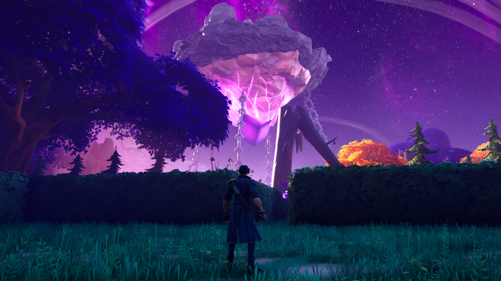
CoreUndead
Action Adventure / Shooter · Game Design, Level Design, Combat Design, Set Dressing, Lighting
My first complete game in UEFN, taken from the first design document to a published, playable island. All gameplay built with Fortnite's creative devices.
- The glowing Core is visible from every part of the map, always pulling players toward the goal
- Unique "special trees" act as landmarks so players never lose their bearings

Cursebreaker: Bringer of Death
Action RPG / Hack and Slash · Level Design, Combat Spaces, Set Dressing, Lighting
A souls-like action-RPG level built with my team at KPU, plus a custom outline post-process shader.
- My part: level design, combat spaces and lighting. I also helped with the post-process materials and the game design.
CoreUndead, beat by beat
The layout is linear, with secret areas that open up when the player destroys barriers. Each point of interest rewards exploring with loot or story moments, and some end in a boss fight.
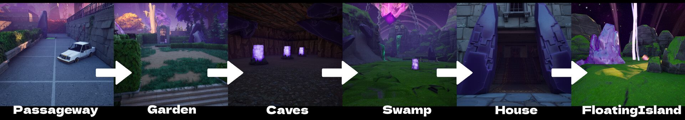
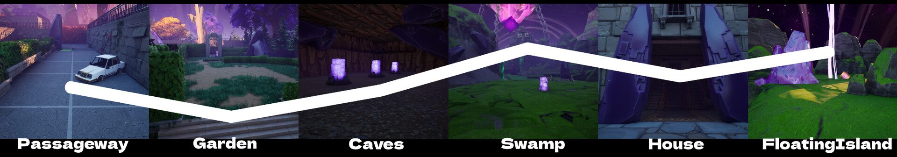
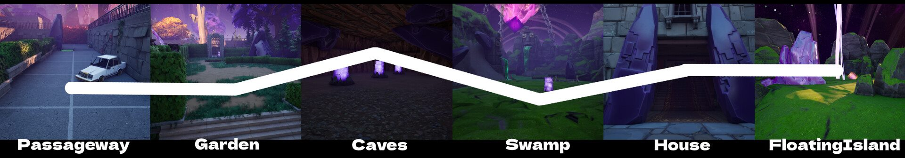
HighLowIntensity builds through the Caves to its peak in the Swamp, drops in the House, then climbs again for the Floating Island finale. The Swamp's peak doesn't come from enemies: it comes from a pressure mechanic I keep secret from players.
Reveal the spoilerHide the spoiler
The water keeps rising on a timer, and the player has to reach the end of the Swamp before it does. The pressure comes from the clock, not from enemies, which is why combat drops right where intensity peaks.
A five-week solo project in UEFN. After the first alpha I sent it out for playtesting and collected notes on platforming feel, narrative and combat. Read the full breakdown
Cursebreaker, beat by beat
The layout is linear, with secret areas reached by platforming. Each point of interest rewards exploring with loot or story moments, and every area ends in a boss fight or an arena fight.
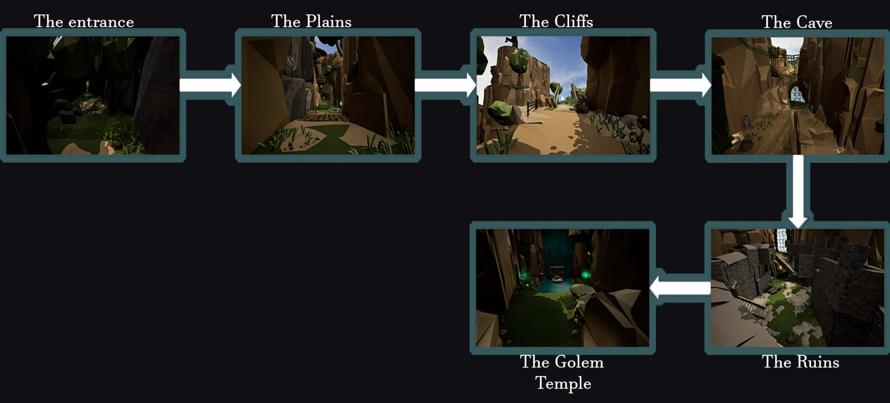
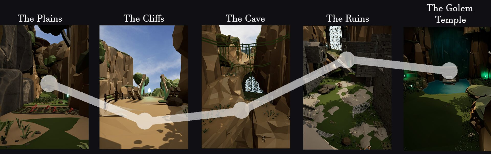
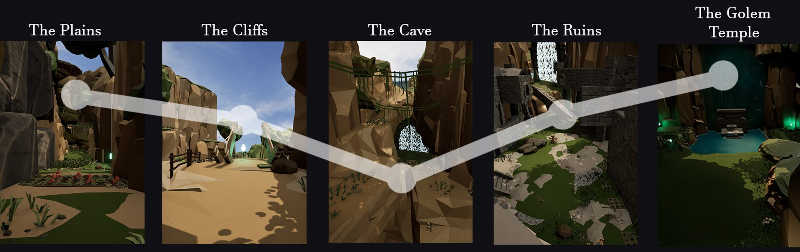
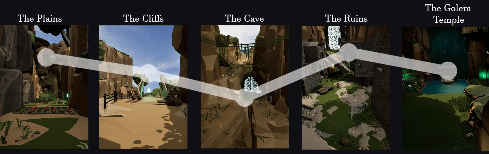
A 10-week team project for the Advanced Game Design course at KPU. With more time, I'd make the cave-to-ruins connection larger and add a small hub area to explore. Read the full breakdown
More projects
Open in the galleryThe finished levels. For how they were planned and built, see Breakdowns below.
Cursebreaker: Bringer of Death
Action RPG / Hack and Slash · Level Design, Set Dressing, Lighting
A souls-like action-RPG level built with my team at KPU, plus a custom outline post-process shader.
My part: level design, combat spaces and lighting. I also helped with the post-process materials and the game design.
Read the full projectSpark: Skypiea Island
Platformer · Level Design · Unreal Engine 4
A floating-island level with wind tunnels, Blueprint puzzles and hidden boss fights that reward exploration.
My part: level design, puzzles, combat spaces, lighting and game design.
Read the full projectSpark: DragonWing
Platformer · Level Design · Lighting · Unreal Engine 4
A snowy night-time village that turns a small map into a long, rewarding route by building upward.
My part: everything, from level and game design to puzzles, combat spaces and lighting.
Read the full project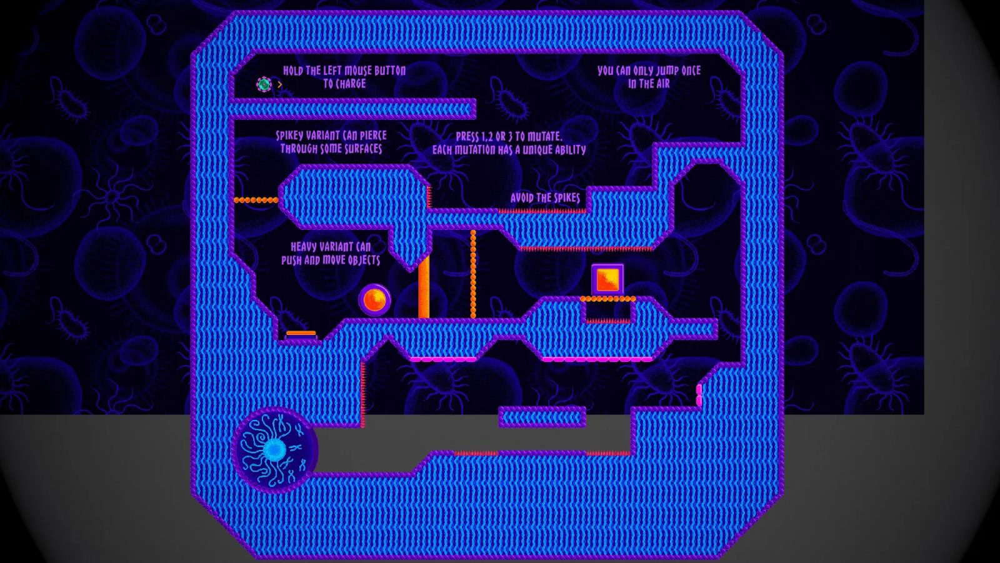
Retrovirus
2D Puzzle Platformer · Level & Puzzle Design · Unity
Play a virus fighting its way to the cell's nucleus. Built in two weeks for the Rapid Prototyping course at the Centre for Entertainment Arts.
My part: level design, puzzle design and playtesting.
Read the full projectBreakdowns
Open in the galleryHow each level was planned and built: references, metrics gyms, layouts, intensity charts and combat pacing.
-
CoreUndead
Game & Level Design · UEFNDec 2024From the first design doc to a published island: metrics gym, combat spaces, hidden areas, intensity chart and combat pacing.
Read the breakdown -
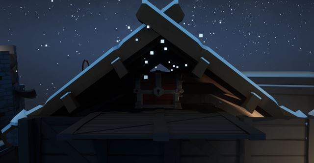
Spark: DragonWing
Level Design · Unreal Engine 4Feb 2024Turning a small map into a long level by building upward: 2D layout, level flow and an island-by-island intensity chart.
Read the breakdown -
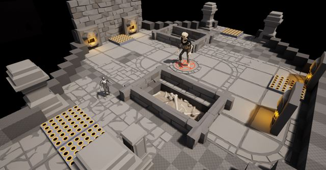
Cursebreaker: Lock and Load
Top-down Shooter · Unreal Engine 5Feb 2024A Hades-inspired shooter split into corridor, arena and boss levels, with layout, intensity and combat pacing charts.
Read the breakdown -
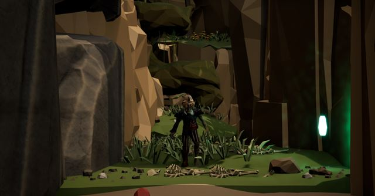
Cursebreaker: Bringer of Death
Action RPG · Team project · UE5Feb 2024A 10-week team project: references, metrics, combat and platforming spaces, set dressing, and narrative and combat pacing.
Read the breakdown
Let's build something
players remember.
Open to full-time, contract and freelance work.